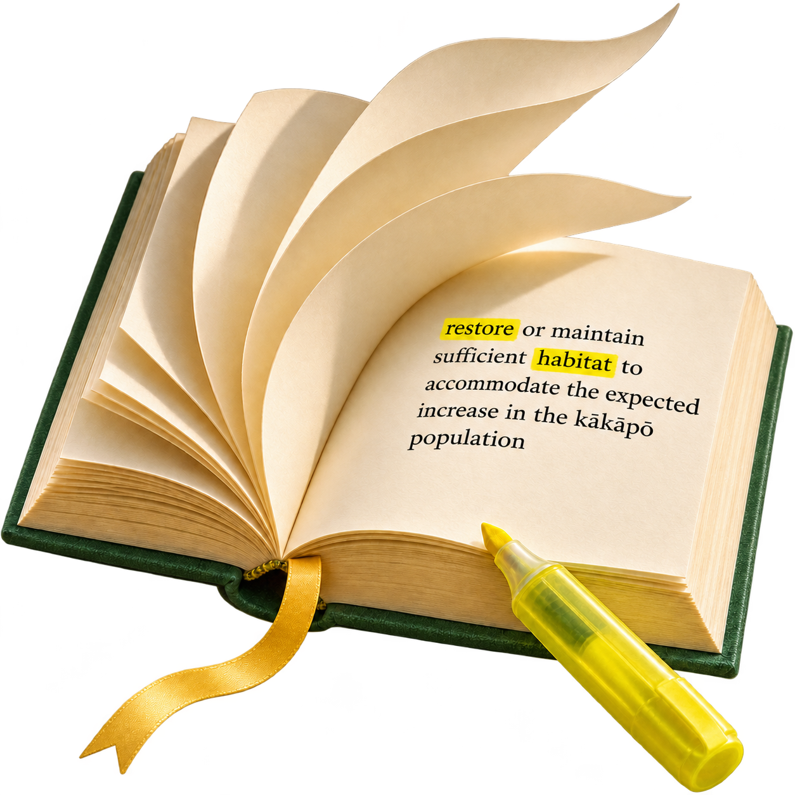

<!doctype html>
<html lang="zh-CN">
<meta charset="utf-8">
<meta name="viewport" content="width=device-width, initial-scale=1">
<title>剑桥雅思学术阅读 · B站视频封面</title>
<style>
* {box-sizing:border-box}
:root {--ink:#102e28; --paper:#fffbec; --yellow:#ffe05d; --soft:#d5e3d2}
html,body {margin:0;width:100%;height:100%;overflow:hidden}
body {font-family:"Noto Sans CJK SC","Source Han Sans SC",sans-serif}
main {width:100vw;height:100vh;position:relative;isolation:isolate;overflow:hidden;
  background:radial-gradient(ellipse at 82% 43%,#367961 0%,#205744 26%,transparent 60%),
             linear-gradient(113deg,#092f29 0%,#103e33 56%,#174734 100%); color:var(--paper)}
main::before {content:"";position:absolute;inset:0;z-index:-1;opacity:.33;
  background:repeating-linear-gradient(116deg,transparent 0 2px,rgba(250,246,216,.028) 3px,transparent 4px)}
main::after {content:"";position:absolute;left:0;top:0;bottom:0;width:14px;background:#f5dc73}
.book {position:absolute;width:43%;right:1%;top:12.8%;filter:drop-shadow(0 21px 24px rgba(2,23,16,.42))}
.copy {position:absolute;left:6.1%;top:0;bottom:0;width:58%;z-index:1}
.kicker {position:absolute;top:9.4%;left:0;display:flex;align-items:center;gap:23px;margin:0;
  color:#f4f5e6;font-size:48px;font-weight:700;line-height:1.3;letter-spacing:2px;white-space:nowrap}
.kicker::before {content:"";width:67px;height:9px;display:block;background:var(--yellow)}
h1 {position:absolute;top:22%;margin:0;font-weight:900;line-height:1.18;white-space:nowrap}
h1 span {display:block; width:max-content}
.subject {font-size:155px;letter-spacing:-5.5px;-webkit-text-stroke:1.3px currentColor}
.method {font-size:176px;letter-spacing:-5.5px;color:var(--yellow);-webkit-text-stroke:1.4px currentColor}
.features {position:absolute;top:66.3%;margin:0;display:flex;align-items:center;gap:26px;
  font-size:54px;line-height:1.25;letter-spacing:4px;font-weight:500;color:var(--paper);white-space:nowrap}
.divider {height:41px;width:2px;background:rgba(232,236,214,.63)}
.edition {position:absolute;left:0;bottom:9.2%;display:flex;align-items:center;gap:28px;
  font-size:48px;line-height:1;white-space:nowrap;font-weight:700}
.range {height:91px;display:flex;align-items:center;gap:13px;padding:0 26px 3px;background:var(--yellow);color:var(--ink);border-radius:5px}
.range strong {font:800 64px/1 Arial,"Noto Sans CJK SC",sans-serif;letter-spacing:-2px;font-variant-numeric:tabular-nums}
.count {font-size:47px;letter-spacing:2px;color:#f7f4dc}
.count strong {font:700 59px/1 Arial,"Noto Sans CJK SC",sans-serif;letter-spacing:-1px;margin-right:7px}
@media(max-aspect-ratio: 3/2) {
  .copy {left:5.65%;width:63%}
  .book {width:45.5%;right:.4%;top:22.7%}
  .kicker {font-size:43px;gap:20px;top:9.8%}
  .kicker::before {width:58px;height:8px}
  h1 {top:24%;line-height:1.22}
  .subject {font-size:127px;letter-spacing:-5px}
  .method {font-size:150px;letter-spacing:-5px}
  .features {top:64.6%;font-size:46px;gap:22px;letter-spacing:3px}
  .divider {height:34px}
  .edition {bottom:12%;font-size:41px;gap:22px}
  .range {height:82px;gap:10px;padding:0 22px 3px}
  .range strong {font-size:56px}
  .count {font-size:40px}
  .count strong {font-size:51px}
}
</style>
<main>
  
  <section class="copy">
    <p class="kicker">剑桥雅思 · 学术类</p>
    <h1><span class="subject">雅思阅读真题</span><span class="method">精读背单词</span></h1>
    <p class="features"><span>逐句翻译</span><i class="divider" aria-hidden="true"></i><span>语境释义</span></p>
    <div class="edition"><span class="range">第<strong id="volumes">20–11</strong>册</span><span class="count"><strong>120</strong>篇</span></div>
  </section>
</main>
<script>
if (new URLSearchParams(location.search).get('edition')==='10-1') {
  document.getElementById('volumes').textContent='10–1';
  document.querySelector('.book').src='book-10.png';
}
</script>
</html>
